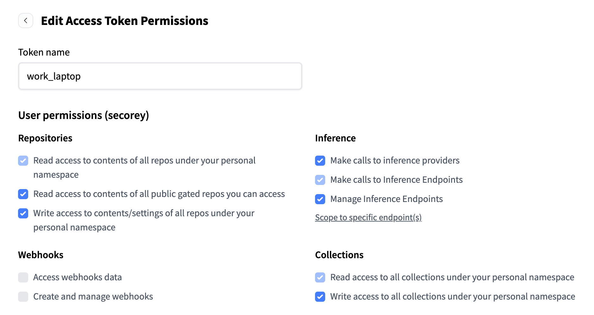

Running Your Own Retrieval-Augmented Generation (RAG) Model¶
RAG models harness the power of Large Language Models (LLMs) to query and summarize a set of documents. Through RAG, one can combine the strengths of retrieval-based and generative models to provide more accurate and contextually relevant responses.
RAG also provides an interesting test case to make use of our resources on the cluster. Here, we provide instructions on how to run a RAG model to query and answer questions about our ORCD documentation.
The code for developing this model can be found in this GitHub repository. Feel free to use this repository as a guide to develop your own RAG model on separate documents.
Getting Started¶
Working on a Compute Node¶
You will need to request an interactive session with a GPU:
I have specified an L40S GPU, which has 48GB of memory. You will need a GPU with at least 40GB of memory to use the 8B model.
Getting Access to HuggingFace¶
The LLMs used in this pipeline are from HuggingFace. By default, we use a model from Mistral, which is gated and requires users to request access. You can follow this process for doing so:
- Create a HuggingFace account
- Request access to mistralai/Ministral-8B-Instruct-2410
-
Create a user access token
You will need to adjust the settings of your user access token so that you can download and run the model. To do so, navigate to your HuggingFace profile, then click "Edit Profile" > "Access Tokens" and edit the permissions for your access token:

Edit your token permissions to match the following:

-
Export your access token as an environment variable on Engaging and add to your
.bash_profileso it can be saved for future uses:export HF_TOKEN="your_user_access_token" echo 'export HF_TOKEN="your_user_access_token"' >> ~/.bash_profileNote
You will not be able to copy your HF token again from the HF website. If you do not save it somewhere, you will need to generate a new one every time you run this.
Running the Model¶
Running in a Container¶
You can run the RAG model on our documentation using the Apptainer image we have saved to Engaging. We have the commands for doing so saved in a shell script. To run the container, you can simply run the following:
The first time you run this, the model will be downloaded from HuggingFace and cached, so it may take a while to get running. Subsequent times will be much quicker because the model has already been downloaded.
The 8B model takes about 15GB of space. The default cache location for
HuggingFace models is $HOME/.cache/huggingface. If you do not have enough
space in your home directory to store the model, you can set the HF_HOME
environment variable to point to another directory. For example, to save models
to your scratch directory (depending on your storage setup), that would look
something like this:
or:
Running via a Python Environment¶
You can avoid the container route and run this using a Python environment. This method is recommended if you would like to make any advanced changes to the pipeline. The steps to do so can be found on this GitHub repository.
Customization¶
To customize this pipeline to fit your needs, aside from editing the
code base itself, you can use the
provided optional flags when you call the script. To see what customizations are
available, use the --help flag:
This will allow you to adjust model temperature, change the path to use a different set of documents, use a different LLM (doing this successfully will likely take some editing of the code base), or pass a set of queries to run in a batch setting.
Using Your Own Documents¶
Be default, the pipeline is set up to run RAG on the ORCD documentation. However, this is designed to be easily adaptable to any set of documents you choose.
If you have created a vector store of documents, you can specify the path to
those documents when you run the pipeline using the --vector_store_path flag:
sh /orcd/software/community/001/pkg/orcd-rag/container/run_rag_with_container.sh --vector_store_path /path/to/vector/store
Creating a Vector Store¶
The RAG pipeline requires that documents be stored in a vector database ("vector
store"), so that relevant information can be queried efficiently. We have
included code for creating a vector store based on .md or .pdf files. First,
you will need to consolidate your documents into a single directory and
upload them to Engaging.
Then, run this command, specifying the path to your directory of documents:
sh /orcd/software/community/001/pkg/orcd-rag/container/create_vector_store_with_container.sh --docs_path /path/to/documents
This will create a vector database located at ~/.cache/orcd_rag/vector_stores/<docs name>_vector_store.
Note
Large files (especially PDFs) may need to be split into smaller files to avoid exceeding memory limits on the GPU.